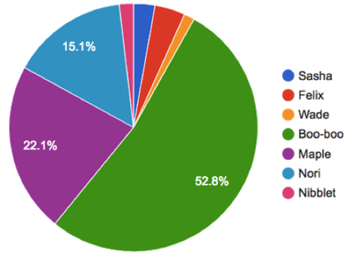
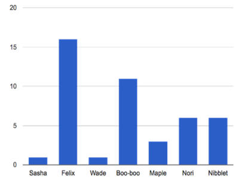

Students construct Bar and Pie Charts in Pyret, to visualize the quantities present in rows of their dataset. They experiment with these visualizations in a contrived dataset, apply them to their own research, and interpret the results. They also begin to write their own Sample Tables
Students answer questions using pie and bar charts
Students use Table Plans to answer questions using pie and bar charts
Students make pie and bar charts for their datasets, and write up their findings
Standards and Evidence Statements:
Standards with prefix BS are specific to Bootstrap; others are from the Common Core. Mouse over each standard to see its corresponding evidence statements. Our Standards Document shows which units cover each standard.
Data 3.1.2: Collaborate when processing information to gain insight and knowledge.
Collaboration is an important part of solving data-driven problems.
Collaboration facilitates solving computational problems by applying multiple perspectives, experiences, and skill sets.
Communication between participants working on data-driven problems gives rise to enhanced insights and knowledge.
Collaboration in developing hypotheses and questions, and in testing hypotheses and answering questions, about data helps participants gain insight and knowledge.
Collaborating face-to-face and using online collaborative tools can facilitate processing information to gain insight and knowledge.
Data 3.1.3: Explain the insight and knowledge gained from digitally processed data by using appropriate visualizations, notations, and precise language.
Visualization tools and software can communicate information about data.
Tables, diagrams, and textual displays can be used in communicating insight and knowledge gained from data.
Length: 90 Minutes
Glossary:
bar chart: a visualization in which a data set is represented by vertical bars, with length proportional to values
pie chart: A chart where the size of each pie slice corresponds to a value in the data set
Materials:
Preparation:
Computer for each student (or pair), with access to the internet
IntroductionTables are great when we want to find a specific piece of information, like "how old is Wade the cat?" or "how long was Nibblet in the shelter before being adopted?".
Turn to Page 37 in your Student Workbook, and answer the questions you find there.
Debrief with the class.
Sometimes it’s easier to visualize your dataset using a chart or a graph. Turn to Page 38 in your student workbook. This page contains two charts for a small sample of 7 animals. On the left, we have a bar chart of animals’ ages. On the right, a pie chart showing their weight. We can make a lot of observations about these charts, and there are two of them written in the table at the bottom of the page. Can you add two more?
Debrief with the class, paying special attention to the last question: when is one chart better than another?
Bar & Pie Charts
Overview
Learning Objectives
Students learn how to visualize quantity with Pie and Bar charts
Evidence Statementes
Product Outcomes
Students answer questions using pie and bar charts
Materials
Preparation
Bar & Pie Charts(Time 15 minutes)
Bar & Pie ChartsYou’ve now seen two kinds of charts: bar chart and pie charts. Both charts involve quantities and labels: each bar and slice is a measure of a quantitative column, and each one has a label. Both charts help us look at the whole dataset at once, and answer questions about quantity. As you’ve observed, bar charts are great when we want to know exactly "how much" of a thing is contained in a single row. Pie charts, on the other hand, are best when we want to know "what percent" of the thing in our table is contained in a single row.
Open your "Animals Dataset (w/Functions)" file. (If you do not have this file, or if something has happened to it, you can always make a new copy.)
Let’s take a look at their contracts...
The last two functions first consume the Table that we want to look at, and their other arguments tell us which columns to look at for both the labels and the values.
In the Interactions Area, type pie-chart(animals-table, "name", "age") and hit Enter. What happens? What happens when you hover over a slice of the pie? These plots are interactive! This allows us to experiment with the data before generating the final image.
Hovering over a pie slice or bar reveals the value or percentage of the whole, and the label.
Create a bar and pie chart showing the age of every animal in the shelter.
Create a bar and pie chart showing the weight of every animal in the shelter.
Table Plans
Overview
Learning Objectives
Evidence Statementes
Product Outcomes
Students use Table Plans to answer questions using pie and bar charts
Materials
Preparation
Table Plans(Time 30 minutes)
Table Plans
Turn to Page 39, and read the word problem carefully. Then write a Contract and Purpose Statement for this word problem.

This time, our Result isn’t a Table – it’s an Image: a pie chart showing the weights of all the dogs in our shelter. Note: When writing a Sample Table, it’s okay to skip a few columns and focus on the ones you care about. Keep this in mind for the future!
Sketch a pie chart based on your Sample Table. When you’re done, move on to defining the function, and fill out the methods to define the table. Do we need to build any columns? Filter any rows? Order the table?
Look to make sure students are drawing the right kind of chart, using the right labels, and have slices that are proportional to the data in their Sample Table.
We’ve got most of our function written:
What expression will produce our result? Our purpose statement tells us we need to make a pie-chart, so we can start there. Which table should we use? Which column gives us our labels? Our values?
If there’s only one method being used, it’s convention to put the method call on the same line as the table.
Putting it all together, we get:
When your teacher has checked your paper, type in this function and try it! Based on this pie chart, does it look like some dogs are a lot heavier than others, or are the weights evenly distributed?
Not at all! Kujo and Mr. Peanutbutter each take up more than 13% of the total weight, but almost every other dog’s share is 7% or less.
Hit this point hard. Seeing the pie slices gives us a feel for the distribution of the dataset.
Up to now, the Sample Table has been provided for you. But for our next Table Plan, you’ll need to make one of your own! A good Sample Table should have:
At least the columns that matter - whether we’ll be ordering or filtering by those columns.
A good Sample Table has enough rows to be a representative sample of the dataset. If our dataset has a mix of dogs and cats, for example, we want at least one of each in this table.
A good Sample Table has rows in random order, so that we’ll notice if we need to order the table or not.
It will take some practice for you to get good at making Sample Tables, but you can start by identifying bad ones! turn to Page 40, and write down what’s wrong with each of these tables.
If you’re teaching a math or statistics class, go deeper to discuss sampling techniques and sample errors.

Turn to Page 41, and fill out the Contract and Purpose Statement. First, we’ll provide a name that refers back to our dataset: animals-table. Then we need to provide a good Sample Table for this word problem. Fill out a good Sample Table and write your result.
Be sure to check the Sample Tables, and even have students trade workbooks and grade each other’s Sample Tables.
Once your teacher has checked your Sample Table, type in the code for this function and try it out!
Your Dataset
Overview
Learning Objectives
Evidence Statementes
Product Outcomes
Students make pie and bar charts for their datasets, and write up their findings
Materials
Preparation
Your Dataset(Time 25 minutes)
Your Dataset
Try making a bar or pie chart of a column in your dataset, and write up your findings on Page 44.
Give students 10-15min to make their next set, and have them share back. Encourage students to read their observations aloud, to make sure they get practice saying and hearing these observations.
Do you notice that the outliers all of something in common? What new questions does this raise? Would you like to change your table by filtering it or building a new column? If so, go deeper into your data, using Page 42 and Page 43 to figure out how you want to change your dataset. Write up your findings on Page 44.
Give students 5-10min to make their next set, and have them share back. Encourage students to read their observations aloud, to make sure they get practice saying and hearing these observations.
Closing
Overview
Learning Objectives
Evidence Statementes
Product Outcomes
Materials
Preparation
Closing(Time 5 minutes)
ClosingBar and Pie Charts are powerful tools that make it easy to talk about the amount (or relative amount) of quantitative data in our dataset. But what if we wanted to see how many dogs v. cats there are in our dataset? This question is about frequency - specifically how often the species column is "cat" or "dog". What if we wanted to know how many animals were between 1-10 pounds, 11-20 pounds, 21-30 pounds, and so on? Once again, that’s a question about how frequent a particular weight range comes up.